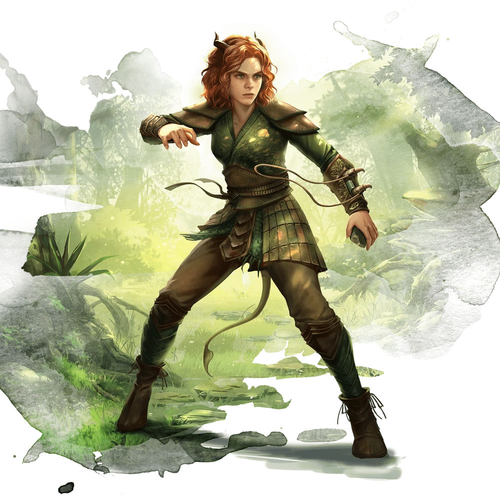

Druida (Druid)

Mestres das rochas e do ferro, destemidos e obstinados diante de adversidades.
Erguendo um cajado retorcido envolto em azevinho, uma elfa invoca a fúria da tempestade e convoca raios explosivos de eletricidade para destruir os orcs carregando tochas que ameaçam sua floresta.
Se esgueirando, fora da vista, no alto da copa das árvores na forma de um leopardo, um humano espreita para fora da selva, em direção da estranha construção de um Templo do Elemental do Ar Maligno, mantendo os olhos fixos nas atividades dos cultistas.
Brandindo uma lâmina feita de puro fogo, um meio-elfo investe em direção a uma massa de soldados esqueléticos, destruindo a magia sobrenatural que deu as tolas criaturas o semblante falso de vida.
Quer seja convocando as forças elementais da natureza, ou emulando as criaturas do mundo animal, os druidas são encarnações da resistência, astúcia e fúria da natureza. Eles não se consideram donos da natureza. Ao invés disso, eles se veem como extensões da vontade indomável da natureza.
Força da Natureza:
Os druidas reverenciam a natureza acima de tudo, adquirindo suas magias e outros poderes mágicos, ou da força da natureza per si ou de uma divindade da natureza. Muitos druidas buscam uma espiritualidade mística de união transcendental com a natureza ao invés de se devotarem a uma entidade divina, enquanto outros servem deuses da natureza selvagem, animais ou forças elementais. As antigas tradições druídicas, algumas vezes são chamadas de Crença Antiga, contrastando com a adoração de deuses em templos ou santuários.
As magias de druida são orientadas para a natureza e para os animais – o poder da presa e garra, do sol e da lua, do fogo e da tormenta. Os druidas também adquirem a habilidade de transformarem em animais e alguns druidas fazem estudos pessoais dessa pratica, chegando até mesmo ao ponto de preferirem formas animais a suas formas naturais.
Uma vida de perigo:
Um bárbaro desempenha um papel importante como protetor de seu povo e líder em tempos de guerra. A vida nos lugares selvagens do mundo está repleta de perigos: tribos rivais, clima mortal e monstros terríveis. Os bárbaros atacam de cabeça esse perigo para que o seu povo não precise fazê-lo.
Sua coragem diante do perigo torna os bárbaros perfeitamente adequados para aventuras. Vaguear é muitas vezes um modo de vida para suas tribos nativas, e a vida desenraizada do aventureiro não representa muitas dificuldades para um bárbaro. Alguns bárbaros sentem falta das estruturas familiares unidas da tribo, mas eventualmente as encontram substituídas pelos laços formados entre os membros de seus grupos de aventureiros.
Preservação do Equilíbrio:
Para os druidas, a natureza existe em um equilíbrio precário. Os quatro elementos que fizeram o mundo – água, ar, fogo e terra – devem permanecer em equilíbrio. Se um elemento começar a ganhar mais poder que os outros, o mundo pode ser destruído, se transformando em um dos planos elementais e se despedaçando em seus componentes elementais. Por tanto, os druidas se opõem a cultos de Elementais Malignos e outros que promovem um elemento, excluindo os outros.
Os druidas também estão preocupados com o delicado equilíbrio ecológico que sustenta a vida animal e vegetal e a necessidade do povo civilizado de viver em harmonia com a natureza, não em oposição a ela. Os druidas aceitam a crueldade da natureza, mas odeiam o que não é natural, incluindo aberrações (como observadores e devoradores de mentes) e mortos-vivos (como zumbis e vampiros).
Os druidas, as vezes, lideram incursões contra tais criaturas, especialmente quando os monstros invadem o território do druida.
Druidas, as vezes, são encontrados guardando locais sagrados ou vigiando regiões de natureza intocada. Porém, quando um perigo significante surge, ameaçando o equilíbrio da natureza ou as terras que eles protegem, os druidas tomam papeis mais ativos em combate contra as ameaças, como aventureiros.
Criando um Druida
Quando estiver fazendo um druida, considere o motivo de seu personagem ter um elo tão próximo com a natureza. Talvez, seu personagem vivesse em uma sociedade em que a Crença Antiga ainda prospera, ou foi criado por um druida após ser abandonado nas profundezas de uma floresta. Talvez, seu personagem teve um encontro dramático com um espírito da natureza, ficando face-a-face com uma águia gigante ou um lobo atroz e sobreviveu a experiência. Ou ainda, seu personagem nasceu durante uma tempestade ou erupção vulcânica épica, que foi interpretada como um sinal que, se tornar um druida era parte do destino do seu personagem.
Você sempre foi um aventureiro como parte do seu chamado druídico ou você primeiro gastou um tempo como um cuidador de um bosque ou fonte sagrados? Talvez, sua terra natal tenha sido manchada pelo mal e você ingressou na vida de aventuras com esperança de encontrar uma nova casa ou propósito.
Tabela do Druida:
| Nível | Bônus de Proficiência | Benefícios | Truques Conhecidos | Espaços de Magia por Nível | ||||||||
|---|---|---|---|---|---|---|---|---|---|---|---|---|
| 1st | 2nd | 3rd | 4th | 5th | 6th | 7th | 8th | 9th | ||||
| 1st | +2 | Druídico, Conjuração | 2 | 2 | - | - | - | - | - | - | - | - |
| 2nd | +2 | Círculo Druídico, Forma Selvagem | 2 | 3 | - | - | - | - | - | - | - | - | 3rd | +2 | - | 2 | 4 | 2 | - | - | - | - | - | - | - |
| 4th | +2 | Aprimoramento da Forma Selvagem, Melhoria na pontuação de Habilidade | 3 | 4 | 3 | - | - | - | - | - | - | - |
| 5th | +3 | - | 3 | 4 | 3 | 2 | - | - | - | - | - | - |
| 6th | +3 | Benefício do Círculo Druídico | 3 | 4 | 3 | 3 | - | - | - | - | - | - |
| 7th | +3 | - | 3 | 4 | 3 | 3 | 1 | - | - | - | - | - |
| 8th | +3 | Aprimoramento da Forma Selvagem, Melhoria na Pontuação de Habilidade | 3 | 4 | 3 | 3 | 2 | - | - | - | - | - |
| 9th | +4 | - | 3 | 4 | 3 | 3 | 3 | 1 | - | - | - | - |
| 10th | +4 | Benefício do Círculo Druídico | 4 | 4 | 3 | 3 | 3 | 2 | - | - | - | - |
| 11th | +4 | - | 4 | 4 | 3 | 3 | 3 | 2 | 1 | - | - | - |
| 12th | +4 | Melhoria de na Pontuação de Habilidade | 4 | 4 | 3 | 3 | 3 | 2 | 1 | - | - | - |
| 13th | +5 | - | 4 | 4 | 3 | 3 | 3 | 2 | 1 | 1 | - | - |
| 14th | +5 | Benefício do Círculo Druídico | 4 | 4 | 3 | 3 | 3 | 2 | 1 | 1 | - | - |
| 15th | +5 | - | 4 | 4 | 3 | 3 | 3 | 2 | 1 | 1 | 1 | - |
| 16th | +5 | Melhoria de na Pontuação de Habilidade | 4 | 4 | 3 | 3 | 3 | 2 | 1 | 1 | 1 | - |
| 17th | +6 | - | 4 | 4 | 3 | 3 | 3 | 2 | 1 | 1 | 1 | 1 |
| 18th | +6 | Corpo Atemporal, Magias da Besta | 4 | 4 | 3 | 3 | 3 | 3 | 1 | 1 | 1 | 1 |
| 19th | +6 | Melhoria de na Pontuação de Habilidade | 4 | 4 | 3 | 3 | 3 | 3 | 2 | 1 | 1 | 1 |
| 20th | +6 | Arquidruida | 4 | 4 | 3 | 3 | 3 | 3 | 2 | 2 | 1 | 1 |
Recursos de Classe:
Como um Druida, você recebe os seguintes recursos de classe.
Hit Points
Hit Dice: 1d8 por nível de classe.
Hit Points no nível 1: 8 + seu modificador de constituição.
Hit nos níveis mais altos: 1d8(ou 5) + seu modificador constituição por nível de classe após o primeiro nível.
Proficiências
Armadura: Armaduras leves, armaduras médias, escudos (druidas não irão vestir armaduras ou usar escudos feitos de metal).
Armas: Clavas, adagas, dardos, azagaias, maças, bordões, cimitarras, foices, fundas e lanças.
Ferramentas: Kit de herbalismo.
Salvaguardas: Inteligência, Sabedoria.
Habilidades: Escolha duas entre Arcanismo, Adestrar Animais, Intuição, Medicina, Natureza, Percepção, Religião e Sobrevivência.
Equipamento
Você começa com os seguintes equipamentos, somados aos equipamentos garantidos pelo seu background (antecedentes).
(a) um escudo de madeira ou (b) qualquer arma simples.
(a) uma cimitarra ou (b) qualquer arma corpo-a-corpo simples.
(a) um pacote de estudioso ou (b) um pacote de explorador.
Armadura de couro, um pacote de aventureiro e um foco druídico.
Druídico
Você conhece o Druídico, o idioma secreto dos druidas. Você pode falar esse idioma e usá-lo para deixar mensagens escondidas. Você e outros que conheçam esse idioma automaticamente veem tais mensagens. Outros perceberão a presença da mensagem se passarem num teste de Sabedoria (Percepção) CD 15, mas não conseguirão decifrá-lo sem magia.
Conjuração
Baseado na essência divina da própria natureza, você pode conjurar magias para moldar sua essência a sua vontade. Veja o capítulo 10 para as regras gerais de conjuração e o capítulo 11 para a lista de magias de druida.
Truques
Você conhece dois truques, à sua escolha, da lista de magias de druida. Você aprende truques de druida adicionais, à sua escolha, em níveis mais altos, como mostrado na coluna Truques Conhecidos da tabela O Druida.
"Plantas e Florestas Sagradas
O Druida tem certas plantas como sagradas, em particular o amieiro, freixo, bétula, elder, avelã, azevinho, zimbro, visco, carvalho, sorva, salgueiro e teixo. Druidas, muitas vezes, usam essas plantas como parte de seu foco de conjuração, incorporando lascas de carvalho ou teixo ou ramos de visco branco.
Da mesma forma, um druida usa tais madeiras para fazer outros objetos, com armas e escudos. O teixo está associado a morte e renascimento, então, empunhaduras de cimitarras ou foices seriam feitas com esse material. O freixo está associado com a vida e o carvalho ocm a força. Essas madeiras fazem excelentes cabos ou armas inteiras, como clavas ou bordões, assim como escudos.
O amieiro é associado ao ar e seria usado para armas de arremesso, como dardos e azagaias.
Os druidas de regiões que não possuem as plantas descritas aqui, tem que escolher outras plantas para usos similares. Por exemplo, um druida de uma região desértica valoriza a árvore da iúca e as plantas de cacto.
Preparando e Conjurando Magias
A tabela O Druida mostra quantos espaços de magia você têm para conjurar suas magias de 1º nível e superiores. Para conjurar uma dessas magias, você precisa gastar um espaço do nível da magia ou superior. Você recupera todos os espaços gastos quando termina um descanso longo.
Você prepara a lista de magias disponíveis selecionando-as da lista de magias de Druida. Você seleciona um número de magias igual ao seu modificador de Sabedoria + seu nível de druida (mínimo de uma magia). Essas magias devem ser de níveis que você possua espaços de magia.
Por exemplo, se você é um druida de 3º nível, você possui quatro espaços de magia de 1º nível e dois de 2º nível. Com Sabedoria 16, sua lista de magias preparadas pode incluir 6 magias, combinando as de 1º e 2º nível em qualquer ordem. Se você preparar a magia de 1º nível curar ferimentos, você pode conjurá-la com um espaço de magia de 1º ou de 2º nível. Ao conjurar a magia, você não a retira de sua lista de magias preparadas, podendo conjurá-la de novo se tiver espaços de magia disponíveis.
Você pode modificar a sua lista de magias preparadas quando termina um descanso longo. Preparar uma nova lista de magias de druida requer tempo gasto em preces e meditação: no mínimo 1 minuto por nível de magia para cada magia preparada.
Habilidade de Conjuração
Sabedoria é a sua habilidade para você conjurar suas magias de druida, já que sua magia vem da sua devoção e sintonia com a natureza. Você usa sua Sabedoria sempre que alguma magia se referir a sua habilidade de conjurar magias. Além disso, você usa o seu modificador de Sabedoria para definir a CD dos testes de resistência para as magias de druida que você conjura e quando você realiza uma jogada de ataque com uma magia.
CD para suas magias = 8 + bônus de proficiência + seu modificador de Sabedoria
Modificador de ataque de magia = seu bônus de proficiência + seu modificador de Sabedoria
Sentido de Perigo
No 2º nível, você ganha uma sensação estranha de quando as coisas próximas não estão como deveriam ser, lhe dando uma vantagem quando você se esquiva do perigo.
Você tem vantagem nos testes de resistência de Destreza contra efeitos que você pode ver, como armadilhas e magias. Para obter esse benefício, você não pode ficar cego, surdo ou incapacitado.
Conjuração de Ritual
Você pode conjurar qualquer magia de druida que você conheça como um ritual se ela possuir o descritor ritual.
Foco de Conjuração
Você pode usar um foco druídico (encontrado no capítulo 5) como foco de conjuração das suas magias de druida.
Forma Selvagem
A partir do 2° nível, você pode usar sua ação para assumir magicamente a forma de uma besta que você já tenha visto antes. Você pode usar essa característica duas vezes. Você recupera os usos quando termina um descanso curto ou longo.
Seu nível de druida determina as bestas em que você pode se transformar, como mostrado na tabela Formas de Besta. No 2° nível, por exemplo, você pode se transformar em qualquer besta que possui nível de desafio 1/4 ou inferior que não possua deslocamento de voo ou natação.
| Formas de Besta | |||
|---|---|---|---|
| Nível | ND Máx | Limitações | Exemplo |
| 2º | 1/4 | Sem deslocamento de voo ou natação | Lobo |
| 4º | 1/2 | Sem deslocamento de voo | Crocodilo |
| 8º | 1 | - | Águia Gigante |
Você pode continuar na forma de besta por um número de horas igual à metade do seu nível de druida (arredondado para baixo). Então, você volta a sua forma original, a não ser que você gaste outro uso dessa característica.
Você pode reverter a sua forma normal prematuramente usando uma ação bônus no seu turno. Você reverte automaticamente se cair inconsciente, cair a 0 pontos de vida ou morrer.
Enquanto estiver transformado, as seguintes regras se aplicam:
Suas estatísticas de jogo são substituídas pelas estatísticas da besta, mas você mantém sua tendência, personalidade e valores de Inteligência, Sabedoria e Carisma. Você também mantém suas proficiências em todas as suas perícias e testes de resistência, além de receber as proficiências da criatura. Se a criatura possuir a mesma proficiência que você e o bônus no bloco de estatística dela for maior que o seu, você usará o bônus da criatura no lugar do seu. Se a criatura possuir qualquer ação lendária ou de covil, você não pode usá-las.
Quando você se transforma, você assume os pontos de vida e Dados de Vida da criatura. Quando você reverte a sua forma normal, você retorna ao número de pontos de vida que tinha antes de se transformar. Porém, se você reverter como resultado de ter caído a 0 pontos de vida, todo o dano excedente será transferido para a sua forma normal. Por exemplo, se você sofrer 10 pontos de dano em forma animal e tiver apenas 1 ponto de vida restante, você reverte e sofre 9 de dano. Contanto que o dano excedente não reduza você a 0 pontos de vida, você não cairá inconsciente.
Você não pode conjurar magias e sua capacidade de fala ou de realizar qualquer ação que requeira mãos são limitadas pelas capacidades da forma da besta que você assumiu. Transformar-se não interrompe sua concentração em uma magia que você já tenha conjurado, no entanto, nem previne você de realizar ações que são parte da conjuração, como convocar relâmpagos que você já tenha conjurado.
Você mantém os benefícios de todas as características de classe, raça ou outras fontes, e pode usá-las caso a nova forma seja fisicamente capaz de fazê-lo. No entanto, você não pode usar qualquer dos seus sentidos especiais, como visão no escuro, a não ser que a sua nova forma também tenha esse sentido.
Você pode escolher se o seu equipamento cai no chão no seu espaço, é assimilado a sua nova forma ou é usado por ela. Equipamentos vestidos e carregados funcionam normalmente, mas o Mestre decide qual equipamento é viável para a nova forma vestir ou usar, baseado na forma e tamanho da criatura. O seu equipamento não muda de forma ou tamanho para se adaptar à nova forma e, qualquer equipamento que a nova forma não possa vestir deve, ou cair no chão ou ser assimilado por ela. Equipamentos assimilados não terão efeito até você deixar a forma.
Círculo Druídico
No 2° nível, você escolhe se identificar com um círculo de druidas: o Círculo da Terra ou o Círculo da Lua, ambos detalhados no final da descrição da classe. Sua escolha lhe concede características no 2° nível e novamente no 6°, 10° e 14° nível.
Melhoria no Valor de Habilidade
Quando você atinge o 4° nível e novamente no 8°, 12°, 16° e 19° nível, você pode aumentar um valor de habilidade, à sua escolha, em 2 ou você pode aumentar dois valores de habilidade, à sua escolha, em 1. Como padrão, você não pode elevar um valor de habilidade acima de 20 com essa característica.
Corpo Atemporal
Começando no 18° nível, a magia primordial que você controla faz com que você envelheça mais lentamente. Para cada 10 anos que passarem, seu corpo envelhece apenas 1.
Magia de Besta
A partir do 18° nível, você pode conjurar muitas das suas magias em qualquer forma que assumir usando a Forma Selvagem. Você pode realizar os componentes somáticos e verbais de uma magia de druida na forma de besta, mas você não é capaz de prover os componentes materiais.
Arquidruida
No 20° nível, você pode usar sua Forma Selvagem um número ilimitado de vezes.
Além disso, você pode ignorar os componentes verbais e somáticos das suas magias de druida, assim como qualquer componente material que não tenha custo e não seja consumido pela magia. Você recebe esse benefício tanto na sua forma normal, quanto na forma de besta da sua Forma Selvagem.
Círculos Druídicos
Apesar de suas organizações serem invisíveis para a maioria dos forasteiros, os druidas fazem parte de uma sociedade que se espalham pela terra, ignorando barreiras políticas. Todos os druidas são nominalmente membros de uma sociedade druídica, apesar de alguns indivíduos serem tão isolados que eles nunca chegaram a ver membros de alta patente da sociedade ou participaram de encontros druídicos.
Os druidas consideram-se irmãos e irmãs. Como criaturas na natureza, no entanto, os druidas, as vezes, competem, ou mesmo caçam uns aos outros.
Em uma escala local, os druidas são organizados em círculos que partilham de certas perspectivas de natureza, equilíbrio e modos de um druida.
Círculo da Terra
O Círculo da Terra é constituído por místicos e sábios que salvaguardam conhecimento e ritos antigos através de uma vasta tradição oral. Esses druidas se encontram em círculos sagrados de árvores ou monólitos para sussurrar segredos primordiais em Druídico. Os membros mais sábios do círculo presidem como os sacerdotes-dirigentes de comunidades que creem na Crença Antiga, e servem como conselheiros para os governantes desses povos. Como membro desse círculo, sua magia é influenciada pela terra onde você é iniciado nos ritos misteriosos do círculo.
Truque Adicional
Quando você escolhe esse círculo no 2° nível, você aprende um truque de druida adicional, à sua escolha.
Recuperação Natural
A partir do 2° nível, você pode recuperar parte da sua energia mágica parando para fazer uma meditação e comunhão com a natureza. Durante um descanso curto, você escolhe espaços de magia gastos para recuperar. O espaço de magia pode ter um nível combinado igual ou menor que metade do seu nível de druida (arredondado para baixo) e, nenhum dos espaços pode ser de uma magia de 6° nível ou superior.
Você não pode usar essa característica novamente até terminar um descanso longo.
Por exemplo, quando você for um druida de 4° nível, você pode recuperar até dois níveis em espaços de magia. Você pode recuperar, tanto uma magia de 2° nível, quanto duas magias de 1° nível.
Magias de Círculo
Sua conexão mística com a terra infunde você com a habilidade de conjurar certas magias. No 3°, 5°, 7° e 9° nível, você ganha acesso a magias de círculo ligadas ao terreno em que você se tornou druida. Escolha o terreno – ártico, costa, deserto, floresta, montanha, pântano, planície ou subterrâneo – e consulte a lista de magias associada.
Uma vez que você tenha acesso a uma magia de círculo, você sempre poderá prepará-la e ela não conta no número de magias que você pode preparar a cada dia. Se você tiver acesso a uma magia que não aparece na lista de magias de druida, a magia, no entanto, será uma magia de druida para você.
| Ártico | 3º círculo | imobilizar pessoa, crescer espinho |
|---|---|---|
| 5° círculo | nevasca, lentidão | |
| 7° círculo | movimentação livre, tempestade de gelo | |
| 9° círculo | comunhão com a natureza, cone de frio | |
| Costa | 3° círculo | passo nebuloso, reflexos |
| 5° círculo | andar na água, respirar água | |
| 7° círculo | movimentação livre, controlar água | |
| 9° círculo | vidência, conjurar elemental | |
| Deserto | 3° círculo | nublar, silêncio |
| 5° círculo | criar alimentos, proteção contra energia | |
| 7° círculo | praga, terreno alucinógeno | |
| 9° círculo | muralha de pedra, praga de insetos | |
| Floresta | 3° círculo | patas de aranha, pele de árvore |
| 5° círculo | convocar relâmpagos, crescer plantas | |
| 7° círculo | adivinhação, movimentação livre | |
| 9° círculo | comunhão com a natureza, passo de árvore | |
| Montanha | 3° círculo | crescer espinho, patas de aranha |
| 5° círculo | mesclar-se às rochas, relâmpago | |
| 7° círculo | moldar rochas, pele de pedra | |
| 9° círculo | criar passagem, muralha de pedra | |
| Pântano | 3° círculo | escuridão, flecha ácida |
| 5° círculo | andar na água, névoa fétida | |
| 7° círculo | localizar criatura, movimentação livre | |
| 9° círculo | vidência, praga de insetos | |
| Planície | 3° círculo | invisibilidade, passos sem pegadas |
| 5° círculo | luz do dia, velocidade | |
| 7° círculo | adivinhação, movimentação livre | |
| 9° círculo | praga de insetos, sonho | |
| Subterrêneo | 3° círculo | patas de aranha, teia |
| 5° círculo | forma gasosa, névoa fétida | |
| 7° círculo | invisibilidade maior, moldar rochas | |
| 9° círculo | praga de insetos, névoa mortal |
Caminho da Floresta:
A partir do 6° nível, mover-se através de terreno difícil não-mágico não te custará nenhum movimento extra. Você também pode passar através de plantas não-mágicas sem ser atrasado por elas e sem sofrer dano delas se elas tiverem espinhos, espinhas ou perigos similares.
Além disso, você tem vantagem em testes de resistência contra plantas criadas magicamente ou manipuladas para impedir movimentação, como as criadas pela magia constrição.
Proteção Natural
Quando você atingir o 10° nível, você não pode ser enfeitiçado ou amedrontado por elementais ou fadas e você se torna imune a venenos e doenças.
Santuário Natural
A partir do 14° nível, as criaturas do mundo natural sentem sua ligação com a natureza e hesitarão em atacar você. Quando uma besta ou plantar atacar você, essa criatura deverá fazer um teste de resistência de Sabedoria contra uma CD igual a das suas magias de druida. Em uma falha, a criatura deve escolher um alvo diferente ou o ataque erra automaticamente. Em um sucesso, a criatura se torna imune a esse efeito por 24 horas.
A criatura está ciente deste efeito antes de resolver atacar você.
Círculo da Lua
Os druidas do Círculo da Lua são ferrenhos guardiões na natureza. Sua ordem se reuni nas noites de lua cheia para partilhar notícias e trocar informações. Eles assombram as partes mais profundas das florestas, onde eles podia ir por semanas a fio antes de cruzar o caminho de outro humanoide e, muito menos outro druida.
Tão mutável quanto a lua, um druida desse círculo poderia espreitar como um grande felino, voar sobre a copa das árvores como uma águia no dia seguinte e mergulhar pela vegetação rasteira como um urso para expulsar um monstro invasor. A selvageria está no sangue do druida.
Forma Selvagem de Combate
Quando você escolhe esse círculo, no 2° nível, você recebe a habilidade de usar sua Forma Selvagem no seu turno com uma ação bônus, ao invés de com uma ação.
Além disso, enquanto você estiver transformando pela sua Forma Selvagem, você pode usar uma ação bônus para gastar uma espaço de magia e ganhar 1d8 pontos de vida por nível do espaço de magia gasto.
Formas de Círculo
Os ritos do seu círculo garantem a você a habilidade de se transformar em formas animais mais poderosas. A partir do 2° nível, você pode usar sua Forma Selvagem para se transformar em uma besta com nível de desafio até 1 (você ignora a coluna ND Max da tabela Formas de Besta, mas ainda deve acatar as limitações descritas lá).
A partir do 6° nível, você pode se transformar em uma besta com nível de desafio tão alto quanto seu nível de druida dividido por 3, arredondado para baixo.
Ataque Primordial
A partir do 6° nível, seus ataques na forma de besta contam como mágicos com os propósitos de ultrapassar resistência e imunidade a ataques e danos não-mágicos.
Forma Selvagem de Elemental
No 10° nível, você pode gastar dois usos da sua Forma Selvagem, ao mesmo tempo, para se transformar em um elemental da água, elemental do ar, elemental do fogo ou elemental da terra.
Mil Formas
No 14° nível, você aprende a usar magia para alterar sua forma física de formas mais sutis. Você pode conjurar a magia alterar-se à vontade.
"O DRUIDA E OS DEUSES
Alguns druidas veneram as próprias forças da natureza, mas, a maioria dos druidas são devotados de uma das muitas divindades da natureza adoradas no multiverso (a lista de deuses encontrada no apêndice B inclui muitos desses deuses). A adoração desses deuses é, muitas vezes, considerada uma tradição mais antiga que as crenças de clérigos e pessoas urbanizadas. De fato, no mundo de Greyhawk, a doutrina druídica é chamada de Crença Antiga, e ela reivindica muitos adoradores dentre os agricultores, silvicultores, pescadores e outros que vivem perto da natureza.
Essa tradição inclui a adoração da Natureza como força primordial acima de personificação, mas também engloba a adoração de Beory, a Mãe Oerth, assim como a devoção a Obad-Hai, Ehlonna e Ulaa. Nos mundos de Greyhawk e dos Reinos Esquecidos, os círculos druídicos não estão normalmente conectados a fé de uma única divindade da natureza. Cada círculo dos Reinos Esquecidos, por exemplo, pode incluir druidas que reverenciam Silvanus, Mielikki, Eldath, Chauntea ou, até mesmo os ferozes Deuses da Fúria: Talos, Malar, Auril e Umberlee. Esses deuses da natureza são, muitas vezes, chamados de Primeiro Círculo, o primeiro entre os druidas, e muitos druidas consideram todos (até os mais violentos) como merecedores de veneração.
Os druidas de Eberron possuem crenças animistas, completamente desconectados do Soberano Anfitrião, dos Seis Sombrios ou de qualquer outra religião do mundo. Eles acreditam que cada coisa viva e cada fenômeno natural – sol, lua, vento, fogo e o próprio mundo – tem um espirito. Suas magias, portanto, são um meio de se comunicar e de comandar esses espíritos.
Diferentes seitas druídicas, no entanto, possuem diferentes filosofias sobre o relacionamento mais adequado com esses espíritos entre si e com as forças da civilização. O Ashbound, por exemplo, acredita que a magia arcana é uma abominação contra a natureza, as Crianças do Inverno veneram as forças da morte e os Guardiões do Portal preservam tradições antigas destinadas a proteger o mundo da incursão de aberrações.